[Pinchar en las imágenes para ampliarlas y ver su detalle]
Tarea 1.1
En este primer apartado se han tomado las siguientes opciones de diseño:
Vídeo original: clip-01.mp4. Obtenido con un teléfono Samsung S10. Se procede a codificarlo con Avidemux según las siguientes características.
Tamaño de los videos: en 1080p. Para contenidos de videos hoy en día es casi un estándar la resolución 1080p, las principales distribuidoras de contenido lo usan, y dado el tamaño del vídeo parece una opción adecuada para una correcta visualización, sin un excesivo tamaño y con buena resolución.
Formatos: se opta por incluir los siguientes formatos para garantizar compatibilidad, optimización de carga, redundancia y respaldo, SEO y accesibilidad:
MP4 (códec H.264): como primera opción, dado que es formato ampliamente usado y compatible; buena calidad con una compresión eficiente.
WebM (códec VP9): como opción que garantice mayor compresión con similar calidad como opción para conexiones lentas o con poca cobertura que requiera menor peso. Además, no tiene restricciones de licencia.
OGV (códec Theora): opción de código abierto para otro tipo de navegadores. Codificación fuera de Avidemux, al no soportar este códec la aplicación. Este video se ha comentado en el código, dejándolo como opcional dado que por el tamaño no he podido subirlo a GitHub. Quedaría pendiente codificarlo con otro software para ajustar su tamaño al máximo posible y que en la publicación de la web si se pudiese considerar.
MKV (códec H.265): opción para los más exigentes, aunque la mayoría de los navegadores no implementan esta opción (sobre todo por costes de licenciamiento), se deja enlace para descargar el video en este formato.
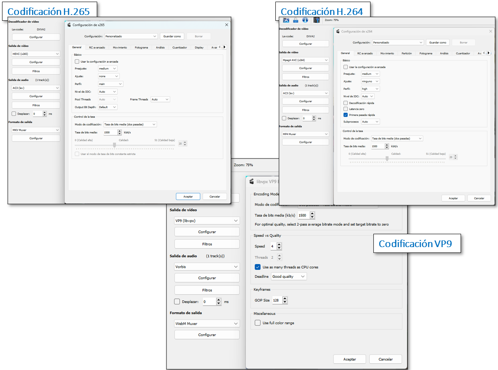
Avidemux codificaciones
×
Tasa de bits: codificado con Avidemux al 10% de la tasa original(Tasa de bits media (dos pasadas), para aligerar el peso del archivo. Si bien no hablamos de un video pesado, se aprovechan los conocimientos adquiridos en la asignatura para obtener una calidad similar con un menos peso, lo que simplificará su difusión en la red. Se observa como si bien la codificación con H.264 al 10% de la tasa de bits del video original respeta la tasa indicada, al codificar con VP9, debido a la naturaleza de compresión del video, se adapta a la complejidad del video. Al ser éste un video sin mucha complejidad visual no necesita de una tasa de bits muy alta para mantener la calidad de este, por ello, creo que la codificación se ajusta más a la realidad del contenido y se optimiza para su distribución. Si bien se podría ajustar una tasa de bits aún menor, he querido jugar con estos valores para valorar la experiencia final de usuario y verificar cómo se comporta la Web. Además, a simple vista, la calidad del video no se ve mermada y su tamaño ofrece una mejor respuesta y experiencia de usuarios finales, dado que se reduce su tamaño a más de la mitad. Esta es la comparativa:
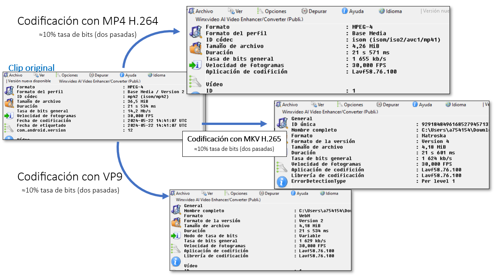
MediaInfo comparativa
×
Tarea 1.2
HTML5 ofrece de forma nativa, flexible y eficiente métodos estándar, de amplia versatilidad, para la publicación y visualización videos a través de la Web dando alcance a multitud de dispositivos móviles o de escritorio. Introduce nuevos elementos para incrustar contenido multimedia, como son las etiquetas "video" y "audio", sin la dependencia de antaño de otras tecnologías de terceros, como Flash. Da compatibilidad directa en los navegadores de más amplio uso en le red y soporta varios formatos de los más extendidos.
Además, se basa en un estándar abierto y flexible, sin restricciones por licenciamiento, lo que da a la comunidad de desarrollo opciones de crear soluciones más personalizadas y escalables. Da muchas opciones sobre el comportamiento y apariencia de los videos, pudiendo integrarse con otros lenguajes, como JavaScript y CSS, dando como resultado unas interfaces de usuario mucho más personalizadas, amigables, ricas, interactivas y accesibles (con opciones nativas para describir el contenido del video, transcripciones o subtítulos o alternativas de teto para elementos visuales).
Tarea 1.3
Esta web se ha creado dentro de un repositorio de GitHub, aprovechando una de sus características: GitHub Pages. Esta, permite crear y alojar sitios web directamente desde los repositorios. Permite una gran cantidad de opciones de forma gratuita, al margen de la integración con el universo Git, de personalización del sitio y opciones de configuración, como usar un dominio personalizado.
Considero es una gran opción, sencilla, cómoda y muy útil no sólo para el propósito de esta práctica sino a nivel personal e, incluso, corporativo.
Tarea 1.4
Funcionalidades añadidas en la etiqueta video principal, entre todas las vistas:
controls: con el objetivo de mostrar los controles de vídeo incorporados.
muted: por defecto, el sonido del video estará desactivado.
preload: para indicar al navegador que no descargue el video por defecto, pero sí sus metadatos, dejando a elección del espectador reproducirlo o no presionando play.
playsinline: con el objetivo de que para dispositivos móviles no se reproduzca el video a pantalla completa, si no dentro de su área específica.
poster: para mostrar una imagen como presentación antes de comenzar con el video.
source: como etiqueta contenedora del archivo de video. Se incluyen varios formatos para garantizar compatibilidad con diversos navegadores; la operativa sería, intenta mostrar el primer video (mp4), si no es compatible, el siguiente (WebM) y, así, con el resto. En caso de no poder cargar ninguno, muestra una imagen de video no soportado y, por último, si se trata de un navegador sin capacidad gráfica, muestra un texto.
img: para, en caso de no poder mostrar ningún video, mostrar una imagen que indique lo que está sucediendo.
Tarea 1.5
Dentro de los servicios de transcoficación ofertados por los CDN se pueden destacar:
Servicios de transcodificación y adaptación de Contenido
Adaptación al dispositivo: transcodificación de videos en diferentes resoluciones y formatos para adaptarse a distintos dispositivos en los que se intente reproducir el contenido(móviles, tablets o TV de última generación), incluyendo la creación de variantes de video para Streaming adaptativo (HLS o DASH).
Ajuste de bitrate:en tiempo real en función de las condiciones de la red del usuario final para una experiencia de visualización sin interrupciones.
Generación de subtítulos: de forma automática mediante el uso de tecnologías de reconocimiento de voz y procesamiento de lenguaje natural.
Traducción de subtítulos: de manera automática a múltiples idiomas con el objetivo de llegar a una audiencia mundial.
Redimensionamiento dinámico: de imágenes al vuelo para diferentes tamaños y resoluciones de pantalla.
Conversión de formato: convierte imágenes a formatos más eficientes (como WebP) con el objetivo de minimizar tamaño de los archivos y, por consiguiente, mejorar los tiempos de carga.
Servicios avanzados de análisis y gestión de contenidos
Detección de cambios de escena: existen algoritmos que identifican cambios de escenas, que se pueden usar para insertar anuncios o hacer transiciones suaves en la reproducción.
Marcado de eventos: como, por ejemplo, hitos que se identifican y marcan automáticamente en el contenido de video (touchdowns en un partido de Fútbol Americano, goles en fútbol, etc.).
Reconocimiento facial: como la detección de caras en el contenido de video, que luego puede ser usado para etiquetado automático o para la personalización de la experiencia del usuario.
Análisis de audiencia: por ejemplo, con detección facial para analizar la demografía de la audiencia y personalizar el contenido en función de estos datos.
Servicios de seguridad y protección de contenidos
Marcas de agua: se oferta la inclusión de marcas de agua visibles, o invisibles, para rastrear la distribución no autorizada.
DRMs: se realiza una gestión de derechos digitales para asegurar que solo los usuarios autorizados puedan acceder al contenido, tal y como hacen, por ejemplo, las plataformas de contenidos audiovisuales.
Autenticación y autorización: se realiza el uso tokens seguros para controlar el acceso al contenido, controlando los accesos no autorizados.
Optimización del rendimiento
Edge Computing: se realizan operaciones en los servidores del borde (edge servers) más cercanos al usuario final para reducir la latencia y, por tanto, mejorar el rendimiento.
Almacenamiento en caché dinámico: de contenido dinámico y estático para reducir tanto los tiempos de carga como la carga en los servidores de origen.
Integración y API
APIs de control: que permiten a los desarrolladores gestionar y controlar el contenido de manera programática.
Integración con plataformas de terceros: con plataformas y servicios, como sistemas de gestión de contenido, de análisis o servicios de publicidad.
[Pinchar en las imágenes para ampliarlas y ver su detalle]
Tarea 2.1
Codificación del clip01.mp4 original al formato y codificación establecida en la práctica:
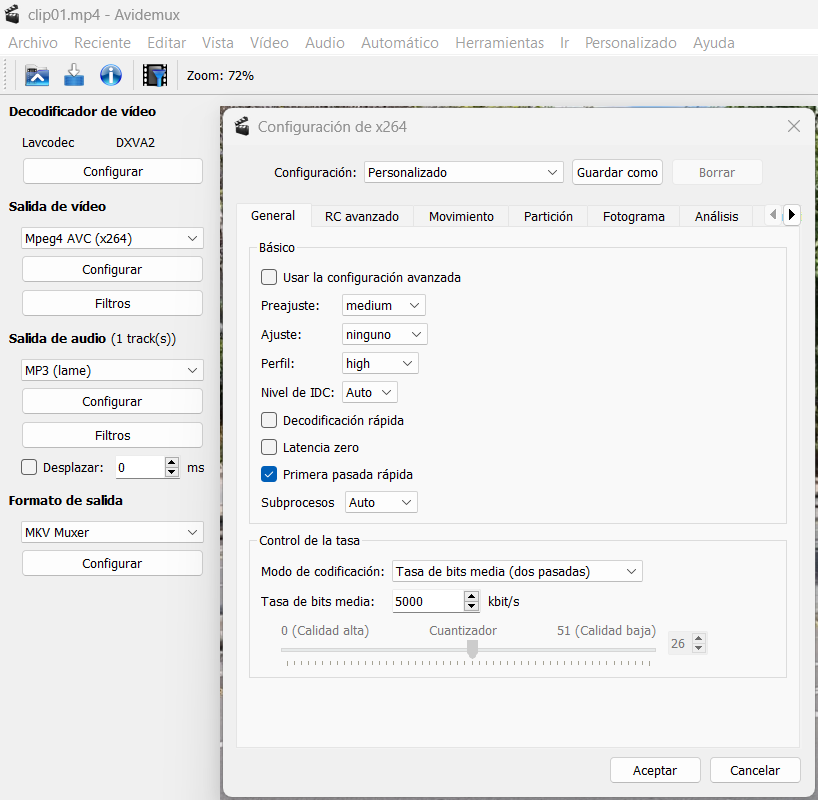
Codificación clip01
×
Tarea 2.2 y Tarea 2.3
VLC de Emisión:
Códec: H264 - MPEG-4 AVC
Media aproximada de Tasa de bits de contenido: 5000 kb/s
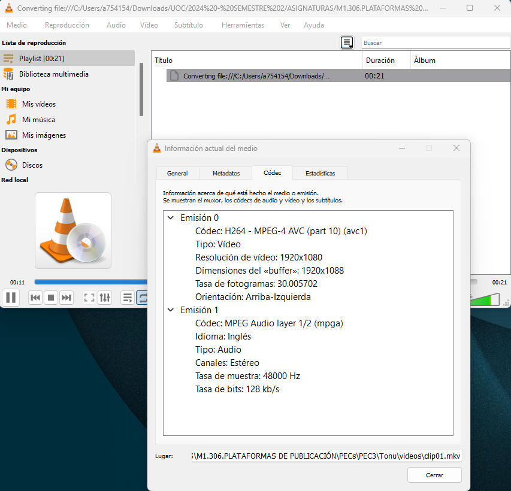
Codificación Emisor VLC
×
VLC de Recepción:
Códec: H264 - MPEG-4 AVC
Media aproximada de Tasa de bits de contenido: 1500 kb/s
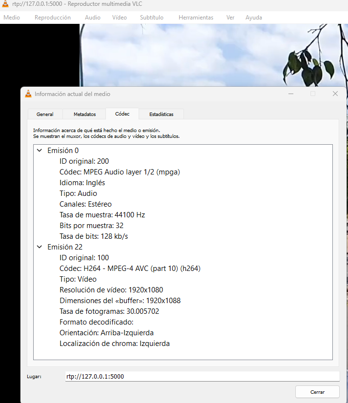
Codificación Emisor VLC
×
Tarea 2.4
El retardo experimentado en la pausa del receptor que observo está, aproximadamente entre 1,5 segundos y 2 segundos, y puede estar relacionado con varios factores que, por otro lado, son comunes en las retransmisiones de streaming:
Buffering
Buffer en el receptor: en la retransmisión el reproductor del receptor almacena una cierta cantidad de datos en un buffer asegurando que la reproducción sea fluida y no se vea interrumpida por fluctuaciones en la red. Por esto se reproduce un retraso, porque el receptor está reproduciendo datos que ya ha recibido y almacenado antes de que llegue la instrucción de la pausa.
Buffer en la red: puede haber buffering en varios puntos intermedios en la red, especialmente si se trata de una transmisión a través de Internet o una red con varios nodos, aunque esto no debería ser determinante dado que la prueba es en local o, al menos, no impactar directamente.
Latencia de la red
Transmisión de datos: incluso en una red local, siempre hay una latencia aosociada a la transmisión de los datos, dado que éstos deben viajar dentro de la red y el receptor debe procesar los datos, transformarlos si procede y comenzar la emisión.
Protocolo de transmisión: la latencia varía en función del protocolo usando, en nuestro caso es rtp, dado que algunos priorizan a latencia, pero otros la sacrifican en cierta medida en pos de fiabilidad y calidad.
Procesamiento del receptor
Procesamiento del buffer y sincronización: el receptor debe procesar el contenido que tiene en el buffer antes de que una instrucción, como la pausa, sea procesada, incluyendo la decodificación del audio y del video, así como los ajustes de los tiempos de reproducción.
Configuración del emisor y del receptor
Tamao del buffer y configuración de la red: los tamaños del buffer de ambos extresmo pueden afectar a los tiempos de procesar la pausa solicitada, si se configuran buffers más altos, debe procesar más datos antes de que le llegue la señal de pausado. De la misma forma, la porpia configuración de la red puede afectar a este retardo y al procesamiento de instruciones específicas más allá de las propias del Streaming en sí.
Tarea 2.5
Capturas del proceso en diferentes momentos de la emisión:
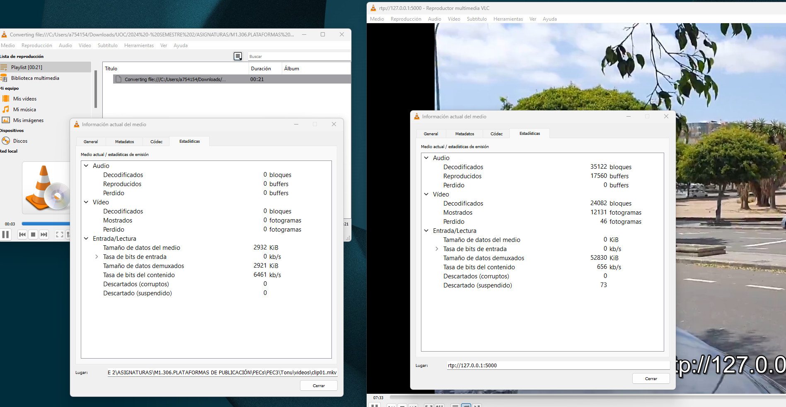
Tasa de bits de contenido t=01
×
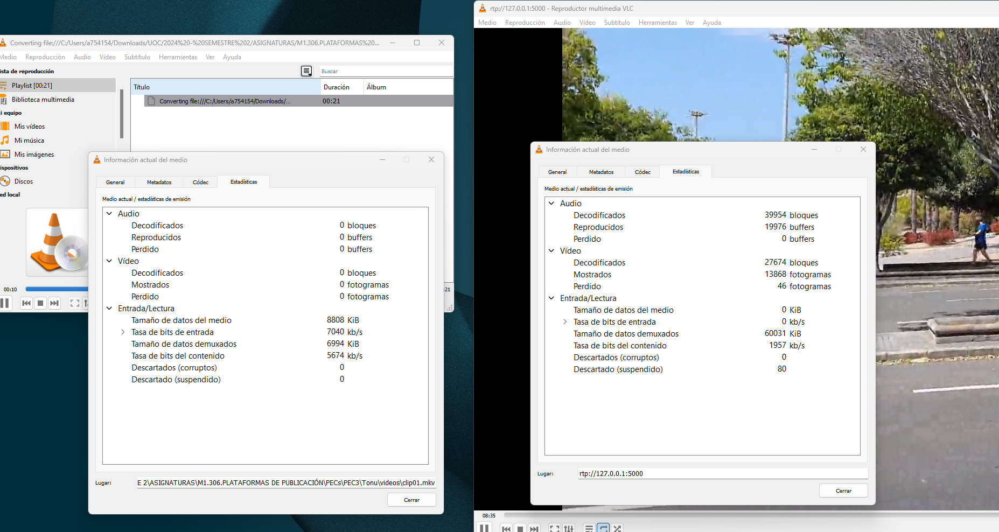
Tasa de bits de contenido t=02
×
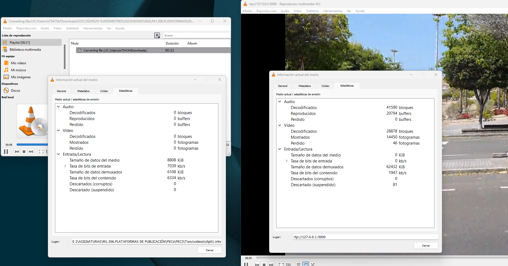
Tasa de bits de contenido t=03
×
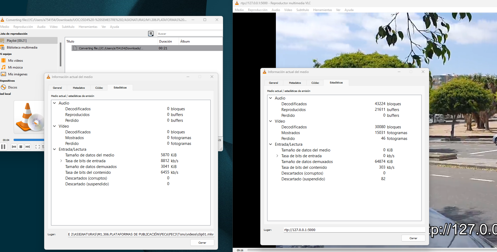
Tasa de bits de contenido t=04
×
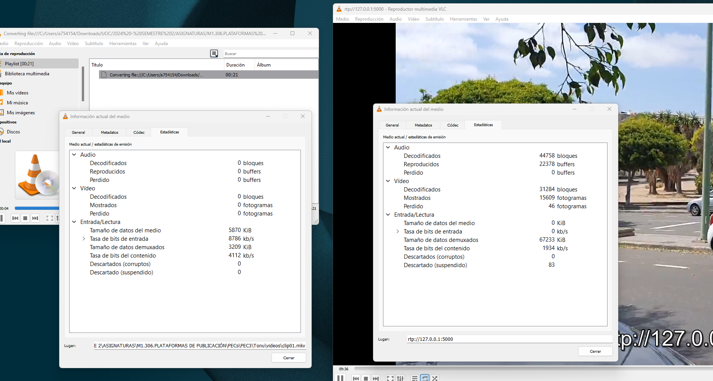
Tasa de bits de contenido t=05
×
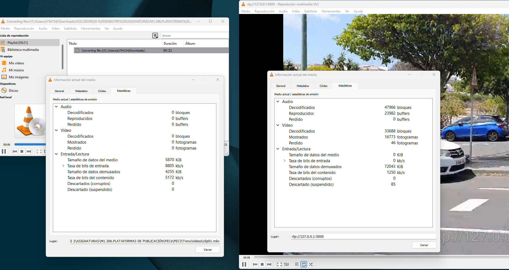
Tasa de bits de contenido t=06
×
Compresión del emisor de VLC:
Aproximadamente, el emisor de VLC está realizando la siguiente compresión teniendo en cuenta las tasas de bits de contenido medias indicadas en los puntos de las tareas 2.2 y 2.3:
Esto significa que VLC está comprimiendo el video con un factor de, aproximadamente, 3,33. Es decir, el flujo de salida del video está utilizando solo un tercio de la tasa de bits del contenido original, lo que creo implica una reducción significativa en la calidad del video original para adaptarse a las limitaciones de ancho de banda del receptor, entiendo que limitadas a la conexión y carga de la red local donde se ha realizado la prueba. Además, hay que tener en cuenta que hay factores adicionales que pueden afectar a la compresión: códecs utilizados, la configuración específica usada en la transcodificación (tasa de bits objetivo, la resolución, el nivel de calidad (CRF)), la propia naturaleza del video si tiene detalles complejos o movimiento, etc. Creo que de los datos obtenidos se extrae que la compresión que ha realizado VLC es significativa, lo que puede originar pérdida de detalles y menor fidelidad respecto del video original.
Tarea 2.6
Streaming de baja latencia con Google Cloud CDN
El Streaming de baja latencia es esencial para aplicaciones donde el retraso entre la captura de video y la visualización por parte del usuario final debe ser mínimo, como en transmisiones en vivo de eventos deportivos, juegos interactivos, y otras aplicaciones en tiempo real. El objetivo, lógicamente, es reducir al mínimo el retraso entre la emisión y la recepción del video por parte del usuario final. He elegido esta opción porque la latencia en este tipo de eventos es fundamental para manejar bien la experiencia de usuario final y, inluso, hay estudios que indican que ante problemas de buffering hasta el 40% de los espectadores abandonan la transmisión, por lo que el impacto de no gestionar correctamente la latencia puede ser crucial para el éxito de este tpo de contenidos. Google Cloud CDN ofrece una infraestructura robusta para soportar este tipo de transmisiones y, dado que ha sido el CDN elegido para las PECs anteriores, me centraré en él y sus opciones. El proceso sería:
Configuración Inicial
Crear una cuenta de Google Cloud: lo primero, como ya sabemos, es disponer de una cuenta de Google Cloud desde Google Cloud.
Configurar el almacenamiento: según el proceso, y como ya vemos en la primera PEC, todo el contenido fuente debe estar almacenado en Google Cloud Storage. Deberemos crear un bucket y subir nuestros archivos de video a dicha ubicación. Los comandos desde la propia consola de Google Cloud serían:
Configurar el servicio de Streaming: utilizando Google Cloud Media CDN prepararemos nuestro video para la transmisión en baja latencia. Google Cloud Media CDN se integra con servicios como Wowza Streaming Engine para manejar la transcodificación y la entrega del video de la mejor forma posible.
Transcodificación: tenemos que asegurarnos que el contenido esté codificado en los formatos adecuados para el streaming en baja latencia. Por ejemplo, HLS y DASH son formatos comunes para la transmisión de video en vivo y ambos son compatibles con Google Cloud CDN, por lo que podrían ser las opciones de formato a elegir. Para ello, podemos hacer uso dehacer uso de servicios como Google Cloud Media Transcoding o herramientas de terceros como FFmpeg o el propio Avidemux, luego el contenido se segmenta en gragmentos más pequeños (chunks) de 2-10 segundos, lo que facilita la entrega a través de HLS o DASH. Un ejemplo para generar videos codificados en otros formatos usando FFmpeg sería éste:
Configuración: Google Cloud CDN puede ser configurado para entregar contenido de video con baja latencia, podemos optar por realizar la creación de una configuración de CDN con cachés distribuidas globalmente, que amplía nuestras capacidades de acecso a público de cualquier parte del globo. Desde la consola de Cloud deberíamos lanzar estos comandos:
Optimización de caché: con Google Cloud CDN podemos definir olíticas de caché específicas para los segmentos de video, podemos configurar la caché para almacenar y entregar contenido en ubicaciones estratégicas con el objetivo de minimizar la latencia, que ya se ha comentado el impacto que puede suponer para una retransmisión en directo.
Distribución del contenido
Distribución: Google Cloud CDN utiliza su red global para distribuir el contenido a los usuarios finales y optimiza los procesos asociados a la baja latencia mediante el almacenamiento en caché del contenido cerca de los puntos de presencia (PoPs) de los usuarios. Con ello, se garantiza que los usuarios finales dispongan el contenido lo más cerca posible de sus ubicaciones, minimizando la latencia. Además de las políticas que se puedan aplicar a la hora de gestionar la red, los nodos y estos puntos finales para garantizar la tolerancia a fallos, la disponibilidad y la robustez del proceso de Streaming.
Monitorización y escalabilidad: como ya se vio en PECs anteriores, Google Cloud proporciona herramientas para monitorizar el rendimiento de la transmisión y ajustar la capacidad según la demanda: Google Cloud Monitoring y Logging para este propósito, de las que se habló en prácticas anteriores y que son dos herramientas muy potentes de las que poder revisar y actuar, incluso de forma desatendida, según la configuración que se establezca.
Gestión y políticas de usuarios
Roles y Permisos: mediante Google Cloud IAM (Identity and Access Management) podemos definir roles y permisos específicos para gestionar la seguridad y el acceso al servicio de transmisión. Por ejemplo, podemos asignar roles como Viewer, Editor, y Admin para controlar quién puede ver, editar, o administrar los recursos del Streaming. Un ejemplo de cómo se puede realizar desde la consola sería este:
Control de acceso: a través de Google Cloud podemos implementar políticas de control para restringir el acceso al contenido de Streaming basándonos en criterios específicos como pueden ser: la ubicación del usuario, el dispositivo con el que está accediendo, las credenciales de acceso que disponga, etc.
Costes estimados
Para calcular el coste aproximado de una transmisión en vivo de, suponemos como punto de partida, un stream HD para 10,000 usuarios simultáneos, consideraremos los siguientes extremos:
Coste de Egress de red: Google Cloud cobra por la cantidad de datos transferidos desde sus servidores a los usuarios finales, tanto de tráfico entre nuestros recursos en Cloud hacia recursos dentro de Cloud como hacia regiones fuera ubicadas en Internet.
Coste de almacenamiento: coste de almacenar el contenido de video en Google Cloud Storage.
Coste de transcodificación: coste de transcodificar el video para diferentes formatos y resoluciones, que suele ser óptimo para abarcar múltiples dispositivos y puestos finales.
Coste de CDN: coste de usar Google Cloud CDN para entregar el contenido a los usuarios.
Un ejemplo con números más reales del coste estimado
Tamaño del Video HD: suponiendo que cada segundo de video HD tiene un bitrate de 5 Mbps.
Transmisión de un minuto: 60 segundos * 5 Mbps = 300 Mbps = 37,5 MB por minuto.
Coste de Egress: según Google Cloud tiene un promedio de, aproximadamente, 0,12 $ por GB para el primer TB. Es decir:
375 GB * 0,12 $/GB = 45 $
Coste de almacenamiento y transcodificación: este punto dependerá en gran medida de los servicios específicos que tengamos contratados y la duración propia del video, pero en línea generales, la mayor parte del coste derivará del egress de red.
Por todo lo anterior, el coste estimado por minuto para una transmisión HD en vivo para 10,000 usuarios simultáneos es de 45$, aproximadamente, si consideramos solo el coste de egress de red. Los costos adicionales de almacenamiento y transcodificación deben ser sumados según los servicios específicos utilizados, pero para este caso, si asumimos una estructura básica el coste sería el indicado.
En resumen, el streaming de baja latencia con Google Cloud CDN implica la configuración de servicios de almacenamiento, transcodificación, y distribución optimizados para minimizar el retraso. La implementación efectiva requiere la gestión de roles y permisos de usuario mediante Google Cloud IAM y la optimización de políticas de caché para asegurar la entrega rápida del contenido. El coste principal proviene del tráfico de red necesario para entregar el video a múltiples usuarios simultáneos.